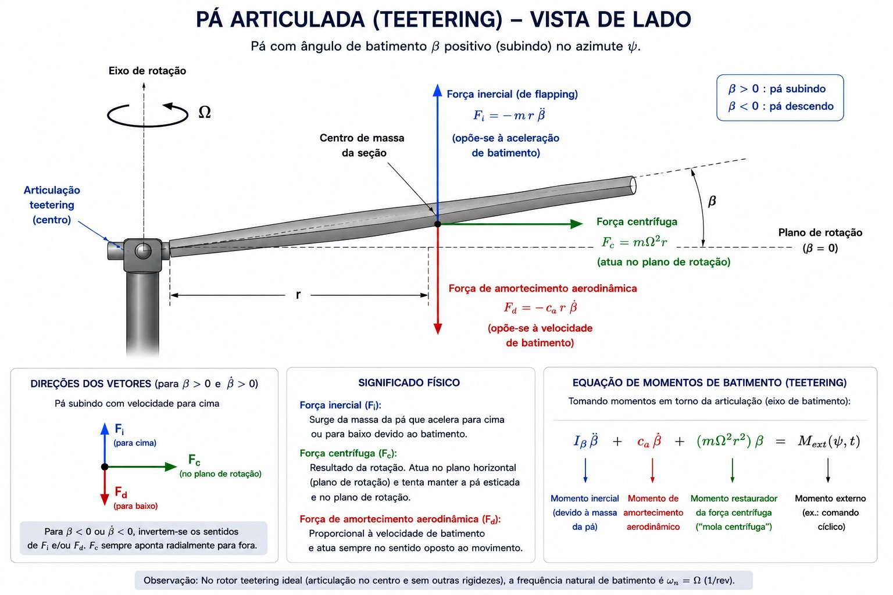
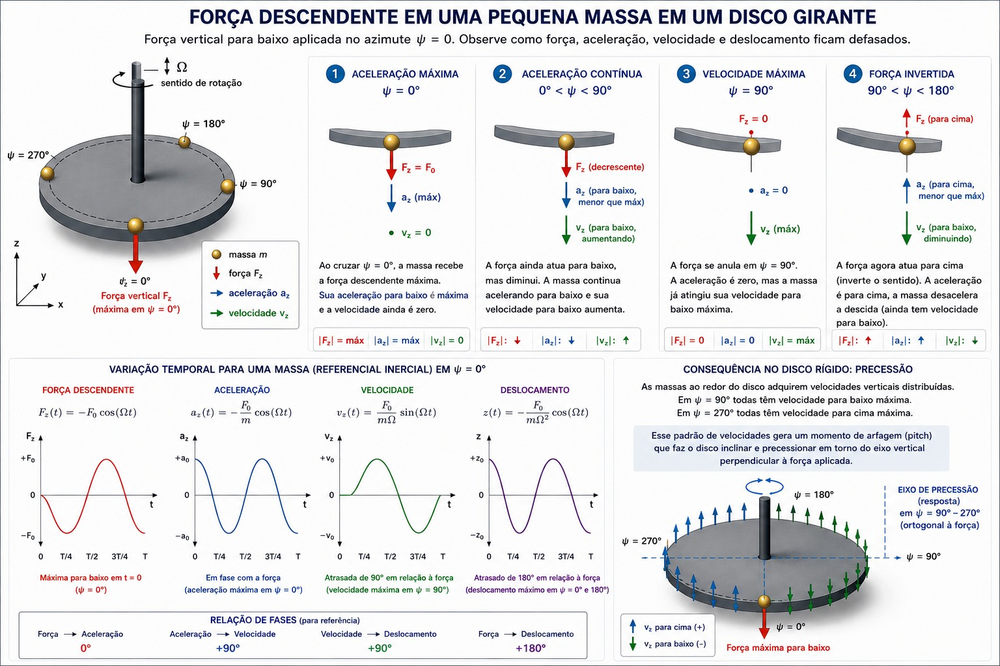

Este white paper reorganiza a linha argumentativa do texto sobre Dinâmica Acoplada de Corpos Girantes e Rotores de Asas Rotativas, mas agora com derivação mais longa, notação única e uma explicação mais explícita dos três casos centrais: rotor/giroscópio no vácuo, rotor/giroscópio com amortecimento viscoso e rotor/giroscópio com rigidez adicional associada a hinge offset ou hingeless.
A ideia central permanece a mesma: a resposta do rotor pode ser lida como um problema giroscópico ou como um problema de ressonância. As duas leituras são complementares e, no modelo linear adotado, descrevem a mesma estrutura diferencial acoplada. A diferença entre os casos é o lugar ocupado pelos termos reativos, dissipativos e restauradores na equação de movimento.
Sumário
- 1. Convenções, Hipóteses e Notação
- 2. A Massa Periférica e o Disco Girante: Por que uma Força em \(\psi = 0\) Gera Resposta em 90°
- 3. Como Derivar uma Equação Giroscópica sem Começar pelo Momento Angular
- 4. A Equação de Batimento do Rotor: Do Modelo Ideal ao Modelo Geral
- 5. Por que a Fase é 90° e Não 180°
- 6. Rotor/Giroscópio no Vácuo
- 7. Rotor com Amortecimento: Lock Number, Frequência e Fase
- 8. Rotor com Hinge Offset e Hingeless: Fase Menor que 90°
- 9. A Forma Mais Compacta: Rotor e Giroscópio como o Mesmo Problema
- 10. Síntese Final
1. Convenções, Hipóteses e Notação
Adotamos a seguinte notação ao longo de todo o texto:
| Símbolo | Significado |
|---|---|
| \(\beta\) | Ângulo de batimento da pá |
| \(\psi\) | Azimute, medido no sentido da rotação |
| \(\Omega\) | Velocidade angular de rotação do rotor |
| \(I_\beta\) | Momento de inércia em batimento |
| \(C_\beta\) | Coeficiente de amortecimento efetivo |
| \(K_c\) | Rigidez centrífuga equivalente |
| \(K_e(e)\) | Contribuição de rigidez do hinge offset \(e\) |
| \(K_s\) | Rigidez estrutural adicional (hingeless) |
| \(\gamma\) | Número de Lock |
| \(\omega_n\) | Frequência natural em rad/s |
| \(\nu = \omega_n / \Omega\) | Razão de frequência |
| \(\zeta\) | Razão de amortecimento |
O número de Lock é definido classicamente por:
\[ \gamma = \frac{\rho a_0 c R^4}{I_\beta} \]
onde \(\rho\) é a densidade do ar, \(a_0\) é a inclinação da curva de sustentação, \(c\) é a corda e \(R\) é o raio do rotor. Na literatura de dinâmica de rotores, \(\gamma\) é tratado como uma medida da razão entre efeitos aerodinâmicos e inerciais.
2. A Massa Periférica e o Disco Girante: Por que uma Força em \(\psi = 0\) Gera Resposta em 90°
Figura Guia e Interpretação Geométrica

A primeira figura representa a pá articulada em vista lateral. A força centrífuga atua no plano de rotação, enquanto a componente inercial e a força aerodinâmica de amortecimento aparecem no eixo de batimento.

A segunda figura é a intuição mais simples e mais poderosa deste white paper: um disco girante com pequenas massas distribuídas na borda. Uma força vertical descendente é aplicada em \(\psi = 0°\).
Dois Níveis de Leitura
Há duas leituras complementares:
Leitura local: uma massa em movimento submetida a uma força harmônica tem aceleração, velocidade e deslocamento defasados.
Leitura global: se essas massas pertencem a um corpo rígido girante, a distribuição espacial de velocidades imposta pela rotação faz com que o disco inteiro incline.
O fato importante: a máxima força em \(\psi = 0°\) produz a máxima aceleração em \(\psi = 0°\), a máxima velocidade em \(\psi = 90°\) e o deslocamento extremo em \(\psi = 180°\). A rotação do disco transforma essa quadratura temporal local em uma precessão espacial global.
Dedução Escalar com uma Massa
Seja uma força vertical local \(F_z(t) = -F_0 \cos(\Omega t)\).
Integrando a equação de movimento:
\[ \dot{z}(t) = -\frac{F_0}{m\Omega} \sin(\Omega t) = \frac{F_0}{m\Omega} \cos(\Omega t - \pi/2) \]
\[ z(t) = -\frac{F_0}{m\Omega^2} \cos(\Omega t) \]
- A velocidade está atrasada 90° em relação à força
- O deslocamento está atrasado 180° em relação à força
Esse resultado não é ainda a precessão em si. A precessão aparece quando o corpo é rigidamente acoplado e a resposta de todas as massas é compatível com a mesma geometria do disco.
3. Como Derivar uma Equação Giroscópica sem Começar pelo Momento Angular
O ponto mais elegante para unificar a análise não é o momento angular, e sim a cinemática de referenciais girantes.
Seja \(\mathbf{b}(t)\) um pequeno vetor de inclinação do disco. O teorema da derivada em sistema girante diz que:
\[ \left.\frac{d\mathbf{b}}{dt}\right|_I = \left.\frac{d\mathbf{b}}{dt}\right|_R + \boldsymbol{\Omega} \times \mathbf{b} \]
Derivando novamente e tomando \(\boldsymbol{\Omega} = \Omega\hat{z}\), obtemos a forma vetorial compacta:
\[ I_\beta \ddot{\mathbf{b}} + 2I_\beta \Omega \hat{z} \times \dot{\mathbf{b}} + I_\beta \Omega^2 \mathbf{b} = \mathbf{M}(t) \]
Expansão em componentes:
\[ I_\beta \ddot{\beta}_x + 2I_\beta \Omega \dot{\beta}_y + I_\beta \Omega^2 \beta_x = M_x \]
\[ I_\beta \ddot{\beta}_y - 2I_\beta \Omega \dot{\beta}_x + I_\beta \Omega^2 \beta_y = M_y \]
Essas são as equações com estrutura giroscópica. O termo de acoplamento cruzado (\(2I_\beta \Omega \hat{z} \times \dot{\mathbf{b}}\)) nasce da própria cinemática do sistema girante — sem precisar invocar explicitamente o momento angular.
O termo \(I_\beta \Omega^2 \mathbf{b}\) é o análogo da rigidez centrífuga.
Falta fechar o vão entre essa equação vetorial e a equação escalar em um único azimute que governará o resto do texto. A redução acontece no referencial rotórico. Escrevendo a inclinação do disco por duas coordenadas ligadas à hélice, a longitudinal e a lateral do plano de pontas, o acoplamento giroscópico sai da cinemática, e cada pá passa a obedecer, em seu próprio azimute, a uma equação escalar de batimento. Os modos naturais do sistema vetorial são dois modos de giro do disco, um progressivo e um regressivo, com frequências espelhadas em torno da frequência natural da pá vista no referencial girante. Uma excitação estacionária de 1/rev, como a que o controle cíclico impõe, compõe esses dois modos e produz um disco inclinado com orientação fixa no espaço. É essa resposta em 1/rev, observada pá a pá em função de \(\psi\), que a próxima seção captura com uma única variável \(\beta(\psi)\): a simetria axial do rotor garante que acompanhar uma única pá equivale a acompanhar o disco inteiro.
4. A Equação de Batimento do Rotor: Do Modelo Ideal ao Modelo Geral
Rotor Teetering Ideal no Vácuo
\[ I_\beta \ddot{\beta} + I_\beta \Omega^2 \beta = M_1 \cos(\Omega t) \]
Daqui em diante escrevemos o azimute como \(\psi = \Omega t\) e adotamos a notação com prima para derivadas em relação ao azimute, com \(\beta'' = d^2\beta/d\psi^2\) e \(\beta' = d\beta/d\psi\). Em azimute: \(\beta'' + \beta = \frac{M_1}{I_\beta \Omega^2} \cos\psi\)
A equação descreve, sem aerodinâmica, a pá articulada em vista lateral da Figura 1: o termo \(I_\beta \Omega^2 \beta\) vem da força centrífuga desenhada no plano de rotação, e \(\beta\) é o grau de liberdade no eixo de batimento indicado na figura.
Neste caso, a frequência natural mecânica é \(\omega_n = \Omega\), isto é, o rotor teetering ideal é um oscilador exatamente em 1/rev.
Forma Geral com Amortecimento e Rigidez Adicional
\[ I_\beta \ddot{\beta} + C_\beta \dot{\beta} + (I_\beta \Omega^2 + K_e(e) + K_s) \beta = M_1 \cos(\Omega t) \]
A frequência natural:
\[ \omega_n = \sqrt{\Omega^2 + \frac{K_e(e) + K_s}{I_\beta}} \]
Definindo \(\nu = \omega_n / \Omega\):
\[ \nu^2 = 1 + \frac{K_e(e) + K_s}{I_\beta \Omega^2} \]
Como Entra o Número de Lock
O momento aerodinâmico de primeira ordem em hover:
\[ M_a \approx \frac{\rho a_0 c R^4}{8} \Omega^2 (\theta - \beta) - \frac{\rho a_0 c R^4}{8} \Omega \dot{\beta} \]
Usando \(\gamma = \rho a_0 c R^4 / I_\beta\):
\[ \frac{M_a}{I_\beta} \approx \frac{\gamma}{8} \Omega^2 (\theta - \beta) - \frac{\gamma}{8} \Omega \dot{\beta} \]
A parte proporcional a \(\dot{\beta}\) gera amortecimento aerodinâmico. A parte proporcional a \(\theta\) gera o comando aerodinâmico harmônico. Resta a parte proporcional a \(\beta\), e ela exige honestidade física: trata-se de uma correção de rigidez aerodinâmica, de primeira ordem em \(\gamma\), que se soma à rigidez centrífuga e desloca a frequência efetiva do rotor. O modelo canônico não descarta esse termo, ele o absorve. A forma final da próxima seção trata \(\nu\) como parâmetro livre, calibrado para concentrar toda a restauração em fase com \(\beta\), tanto a estrutural (\(K_e(e)\) e \(K_s\)) quanto a aerodinâmica recém-identificada. Para um rotor teetering articulado, o balanço líquido mantém \(\nu \approx 1\): o caso permanece essencialmente ressonante. Para um rotor hingeless ou com hinge offset relevante, a rigidez estrutural domina e \(\nu > 1\). A fase de 90°, protagonista deste texto, é exatamente o caso \(\nu = 1\). Afastando-se de 1, a resposta muda continuamente com \(\nu\): nada foi descartado silenciosamente, tudo entrou na calibração de \(\nu\).
Núcleo Mecânico em Termos de \(\gamma\)
O amortecimento aerodinâmico efetivo:
\[ C_a = \frac{\gamma}{8} I_\beta \Omega \]
Em azimute, dividindo por \(I_\beta \Omega^2\) e reunindo toda a restauração, estrutural e aerodinâmica, no parâmetro \(\nu\):
\[ \beta'' + \frac{\gamma}{8} \beta' + \nu^2 \beta = q \cos\psi \]
Essa é a forma mais limpa para discutir fase, frequência natural e estabilidade.
5. Por que a Fase é 90° e Não 180°
O Erro da Intuição Puramente Integrativa
Para um ponto material livre: \(m\ddot{x} = F_0 \cos(\Omega t)\) → \(x(t) = -\frac{F_0}{m\Omega^2} \cos(\Omega t)\) → defasagem de 180°.
Mas no rotor e no giroscópio, há rigidez centrífuga, acoplamento giroscópico, amortecimento e aerodinâmica. A resposta final é a solução harmônica da equação de movimento completa.
O Papel do Estado Estacionário
No estado estacionário harmônico, com \(\beta(t) = \Re\{Be^{i\Omega t}\}\), a parte reativa da equação de movimento satisfaz
\[ I_\beta \ddot{\beta} + I_\beta \Omega^2 \beta = 0 \]
Ou seja: os termos de inércia e rigidez centrífuga se equilibram ponto a ponto no ciclo.
Por que o Resultado é 90°
Quando a parte reativa se cancela, sobra o balanço entre excitação e dissipação:
\[ C_a \dot{\beta} \approx M_{ext} \]
Se a força é proporcional a \(\cos\psi\), a velocidade deve ser proporcional a \(\cos\psi\) também. Como velocidade é a derivada do deslocamento, o deslocamento fica defasado de 90° em relação à força.
A intuição da Seção 2 reaparece aqui em versão completa: a massa da Figura 2 ganhava velocidade máxima um quarto de volta após a força, e o disco girante convertia essa quadratura temporal em precessão espacial. Com o amortecimento aerodinâmico fornecendo o canal dissipativo, o mesmo desenho fecha a conta do estado estacionário.
- 180° é a fase de um sistema puramente inercial
- 90° é a fase do caso ressonante amortecido
A Fase de 90° Instalada na Máquina
A quadratura não é curiosidade algébrica: ela está gravada na geometria do swashplate, o mecanismo que distribui o comando de passo a cada pá. Para baixar o disco numa direção-alvo, a pá precisa receber passo máximo, logo força aerodinâmica máxima, um quarto de volta antes: é ali que nasce a velocidade máxima de batimento que a rotação converte no deslocamento extremo 90° à frente. Os servoatuadores do cíclico de um rotor teetering atuam, portanto, cerca de 90° antes do azimute do ponto baixo desejado. O comando parece adiantado em relação à intuição, mas apenas compensa a defasagem física do rotor descrita neste capítulo. Ignorar essa fase, na mecânica de hastes ou na mistura eletrônica de comandos, é projetar uma aeronave que responde para o lado errado.
6. Rotor/Giroscópio no Vácuo
Sem amortecimento: polos em \(s = \pm i\Omega\) (marginalmente estável). Resposta particular secular:
\[ \beta_p(t) = \frac{M_1}{2I_\beta \Omega} t \sin(\Omega t) \]
A energia colocada no sistema não encontra canal de dissipação. Com \(C_a > 0\), os polos passam para o semiplano esquerdo e a solução estacionária existe.
Esse quadro também marca o limite do modelo linear adotado. A solução secular cresce sem freio porque a hipótese de pequenas oscilações vale só enquanto o batimento é pequeno. Fora desse regime aparecem topes mecânicos, contato da pá com o mastro e acoplamentos com outros graus de liberdade. Dois fenômenos bem documentados ilustram a saída do regime linear. A ressonância de solo nasce do acoplamento entre batimento, arrasto das pás e flexibilidade do trem de pouso, e converte a energia do rotor em oscilação divergente da fuselagem quando falta amortecimento em algum elo da cadeia. O mast bumping, típico de rotores teetering bipá, ocorre quando o batimento cresce até a pá encontrar o mastro, um efeito francamente não linear e potencialmente catastrófico. Nos dois casos o diagnóstico é o mesmo: a resposta deixou de caber na equação linear que sustenta este texto.
7. Rotor com Amortecimento: Lock Number, Frequência e Fase
Resposta Harmônica Geral
\[ B = \frac{M_1/I_\beta}{\omega_n^2 - \Omega^2 + i2\zeta\omega_n\Omega} \]
Com \(\zeta = \gamma / (16\nu)\) e fase:
\[ \phi = \tan^{-1}\left(\frac{2\zeta r}{1 - r^2}\right), \quad r = \Omega/\omega_n \]
Caso Teetering Ideal
Se \(\omega_n = \Omega\) (\(r = 1\)), para qualquer \(C_a > 0\): \(\phi = 90°\)
Amplitude: \(|B| = \frac{8M_1}{\gamma I_\beta \Omega^2}\)
Quanto maior \(\gamma\), maior o amortecimento aerodinâmico, menor a amplitude estacionária em ressonância.
Um Exemplo Numérico: o R22
Para ancorar a fórmula em números reais, considere o Robinson R22, treinador bipá teetering amplamente difundido. Com pás leves e corda modesta, seu número de Lock situa-se em torno de \(\gamma \approx 5\), valor típico de rotores articulados leves. Aplicando \(\zeta = \gamma/(16\nu)\) e \(r = 1/\nu\), a fase da resposta estacionária fica:
| \(\nu\) | \(\zeta\) | \(r\) | \(\phi\) |
|---|---|---|---|
| 0,9 | 0,35 | 1,11 | \(\approx 107°\) |
| 1,0 | 0,31 | 1,00 | \(90°\) |
| 1,1 | 0,28 | 0,91 | \(\approx 71°\) |
A tabela mostra quão sensível é a fase perto da ressonância: um desvio de apenas 10% em \(\nu\) desloca \(\phi\) em cerca de 17° a 19°, cruzando da resposta mais atrasada (\(\nu < 1\)) para a mais adiantada (\(\nu > 1\)) em relação ao quarto de volta ressonante. É esse contínuo que separa o comportamento de um rotor teetering, com \(\nu \approx 1\) e fase em torno de 90°, do de um rotor mais rígido, assunto da Seção 8.
8. Rotor com Hinge Offset e Hingeless: Fase Menor que 90°
Com rigidez adicional: \(\omega_n > \Omega\), portanto \(r < 1\) e \(\phi < 90°\).
A mola introduz restauração adicional em paralelo com a rigidez centrífuga. O rotor não precisa esperar um quarto de volta completo para responder.
O caso limite dessa família é o rotor hingeless, em que a flexibilidade da própria raiz da pá faz o papel da mola. O MBB Bo 105, pioneiro de produção com cabeça rígida, é o exemplo clássico: medições e modelos de qualidade de voo situam sua fase efetiva de controle entre 72° e 76°, contra os 90° do teetering. Com \(\gamma \approx 5\), a fórmula de §7 reproduz esse patamar com \(\nu \approx 1{,}08\): bastam poucos pontos percentuais de rigidez adicional para encurtar a espera em cerca de 15° a 18°.
As consequências aparecem em dois lugares. Na resposta da aeronave, fase menor significa comando mais imediato: o disco alcança a inclinação desejada antes, o momento transmitido ao cubo é maior e a manobra fica mais aguda, ao preço de margens menores entre resposta útil e resposta excessiva, terreno clássico da oscilação induzida pelo piloto quando o amortecimento não acompanha. No projeto do comando, a fase menor precisa ser refletida na orientação angular do swashplate, que deixa de ser o quarto de volta exato do teetering e adianta-se conforme o \(\nu\) da cabeça. A fase, portanto, não é detalhe de ajuste fino: é parâmetro de projeto que conecta a rigidez estrutural do cubo à assinatura dinâmica inteira da aeronave.
9. A Forma Mais Compacta: Rotor e Giroscópio como o Mesmo Problema
\[ \beta'' + \frac{\gamma}{8} \beta' + \nu^2 \beta = q \cos\psi \]
| Parâmetros | Caso |
|---|---|
| \(\nu = 1\), \(\gamma = 0\) | Vácuo ideal sem dissipação |
| \(\nu = 1\), \(\gamma > 0\) | Rotor/giroscópio amortecido |
| \(\nu > 1\), \(\gamma > 0\) | Rotor/giroscópio com rigidez adicional |
Essa mesma equação descreve o rotor em leitura aeromecânica e o giroscópio em leitura mecânica equivalente. O que muda é a interpretação física de cada termo. A estrutura matemática é a mesma.
10. Síntese Final
Resumo dos Três Casos
| Caso | Frequência Natural | Fase | Comportamento |
|---|---|---|---|
| Vácuo | \(\omega_n = \Omega\) | Sem steady state | Amplitude secularmente crescente |
| Amortecido | \(\omega_n = \Omega\) | \(\phi = 90°\) | Resposta estacionária finita |
| Com mola | \(\omega_n > \Omega\) | \(\phi < 90°\) | Resposta antecipada pela rigidez |
O rotor não é apenas parecido com um giroscópio. No modelo linear apropriado, ele compartilha a mesma estrutura matemática com um giroscópio rígido, um giroscópio amortecido e um giroscópio preso a molas. O que muda é a leitura física dos termos da equação.
Referências
[1] Bielawa, R. L., Rotary Wing Structural Dynamics and Aeroelasticity, AIAA Education Series, 2nd ed., 2006. — Tratado fundamental sobre aerodinâmica, aeroelasticidade e dinâmica de rotores. Link
[2] Bramwell, A. R. S., Done, G., e Balmford, D., Bramwell’s Helicopter Dynamics, 2ª ed., Butterworth-Heinemann, Oxford, 2001. — Referência clássica na formulação de voo e acoplamento de rotores de helicóptero.
[3] Coleman, R. P. & Feingold, A. M. — Theory of Self-Excited Mechanical Oscillations of Helicopter Rotors with Hinged Blades. NACA TN 3844. Link
[4] Den Hartog, J. P. — Mechanical Vibrations. Link
[5] Goldstein, H. — Classical Mechanics. Link
[6] Johnson, W., Rotorcraft Aeromechanics, Cambridge University Press, Cambridge, 2013. — Tratado abrangente de aeromecânica de rotores, incluindo dinâmica de batimento, fase de controle e resposta em 1/rev. Sem edição digital confiável, sem link. Link
[7] Leishman, J. G., Principles of Helicopter Aerodynamics, 2ª ed., Cambridge University Press, Cambridge, 2006. — Referência padrão em aerodinâmica de helicópteros, incluindo teoria do momento, dinâmica de batimento e teoria de esteira. Link
[8] Padfield, G. D., Helicopter Flight Dynamics, 2ª ed., Blackwell Science, Oxford, 2007. — Referência abrangente sobre qualidades de voo e modelagem de dinâmica de helicópteros. Sem URL confiável para a obra, sem link. Link
[9] Prouty, R. W., Helicopter Performance, Stability, and Control, Krieger Publishing, Malabar, 2002. — Referência clássica sobre qualidades de voo e controle de helicópteros. Link